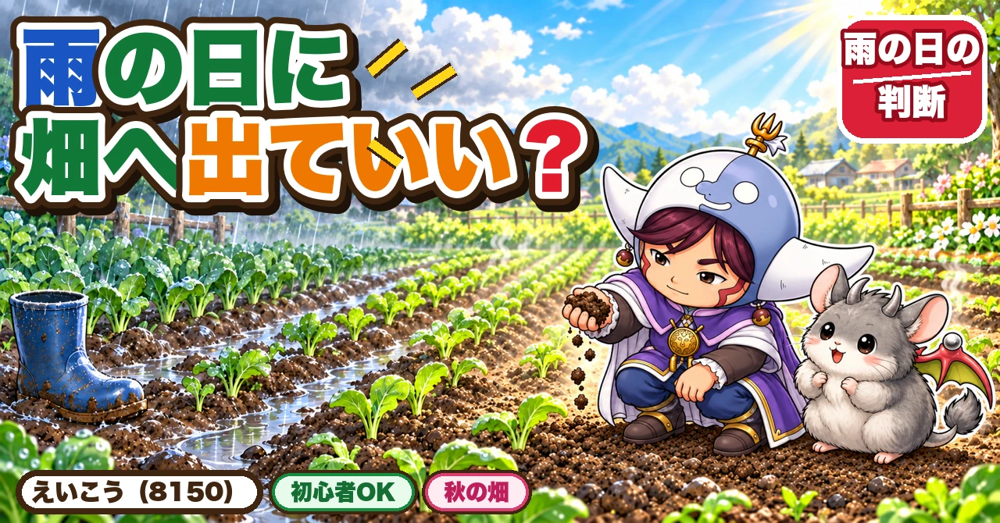

雨の後や雨の日に種まきしていい？雨の畑仕事の判断帳｜種まき・収穫・排水

どうも、8150（えいこう）です🌱 家庭菜園歴8年、理科の教員免許を持っていて、有機・無農薬で野菜を育てています。
📖 この記事の目次
この記事で分かること
- 雨の日の判断は『土を動かす』『株を切る』『水を逃がす』に分けると整理できます。
- 雨が止んでも、土と葉が乾いたとは限りません。空の色だけで再開を決めません。
- 種まきは雨の前後のどちらにも利点があります。野菜、気温、降り方、水やりに通えるかをそろえて比べます。
- 水たまりは、雨が上がった直後にこそ確認したい場所です。排水のための限定した作業と、畑全体の耕し直しを分けます。
- 収穫を待つ説明と、必要な分は収穫する説明があります。株の濡れ方と、遅らせた場合の不利益で選びます。
- 芽が出ない、葉色が悪い、土が硬いときは、追加の水や肥料を考える前に、根の周りに水が残っていないか調べます。
せっかく畑へ行ける日に雨の予報。『今日できないと、次は来週なんですけど…』となりますよね。ここで予定を全部押し通すか、全部やめるかの二択にすると、なんかしんどいです。
どうも、8150（えいこう）です🌱 このページでは、雨に合わせて作業を組み替える方法をまとめます。家庭菜園の予定表は、野菜の都合だけでなく、天気にも相談が必要なんですよね。
先に持ち帰ってほしいのは、『雨が止んだか』より『何が濡れていて、どこに手を加えるか』を見る、ということです。同じ畑でも、通路に水が残り、葉にはしずくがあり、雨をよけた場所は乾いていることがあります。その全部を『雨上がり』の一言で処理しないようにします。
初めてなら、次の早見で今日の仕事を選んでください。まいた種や植えた苗が気になる方は、失敗の見分け方からどうぞ。説明が違って混乱している方は、両論をまとめた章へ。必要な場所から読める形にしています。全部覚えなくても大丈夫です☺️
早見：雨の日の畑仕事（ひと目で分かる判断と数字）
まず、予定していた仕事を振り分ける
- 耕す、土を混ぜる、うねを作り直す：濡れた状態では延期を優先。土を広く動かす仕事は、排水の応急作業と別枠です。
- 脇芽を取る、摘心する、葉を切る：株に新しい傷を作る仕事なので、晴れて株が乾いたときへ回します。土を掘らない仕事でも、雨の日に向くとは限りません。
- 倒れそうな枝を支える、誘引を直す：そのままでは折れるなど、急ぐ理由がある場合に必要な範囲だけ。ついでの芽かきまでまとめて行わないようにします。
- 収穫：濡れた株を切ることを控える考え方と、収穫適期を逃すものは最小限行う考え方があります。雨後なら全部よい、という一覧にはできません。
- 種まき：乾燥対策として雨の水分を利用できることがあります。一方、過湿や強雨による流出を避けたい場合もあります。夏の人参と秋の種まきを同じ扱いにしません。
- 水たまりの観察：雨のあとに優先。どこへ集まり、どこで止まるかが、排水改善の手がかりになります。
- 水を逃がす：出口を確かめてから、必要な箇所だけ手当てします。通路の全面的な耕し直しは、土が落ち着いたあとの仕事です。
- 雨よけやネットの確認：水のたまり、株との接触、内側の虫や濡れ方を見ます。覆ってあることと、管理が済んでいることは別です。
数字は、使える場面まで一緒に覚える
- 雨後の待機日数：このページでは全国共通の数字を設けません。同じ日数でも、土質、日当たり、降った量、気温によって状態が変わります。
- 応急排水の溝：約10cmの深さで作る施工例があります。ただし、特定の豪雨対策の例です。出口の高さや現場の条件を見ずに、10cm掘れば解決すると考えないでください。
- 夏まき人参の発芽温度：15〜25℃なら1週間〜10日ほどで発芽する説明があります。35℃を超える高温では発芽しにくいとされるので、雨が降ったかだけで判断しません。
- 夏まき人参の雨後の湿り：大雨後に土が3〜4日ほど湿りを保つ説明があります。どの畑でもその日数は水やり不要、という保証ではありません。
- 種のまき直し：夏まき人参では1週間〜10日で出なければ切り替える説明があります。低温期や別の野菜へ、その期間をそのまま当てはめません。
- うねの高さ、幅、株間：雨の日専用の一律の寸法はありません。育てる野菜の栽培条件に加え、水の逃げ先を含めて計画します。
- 肥料の量、収穫までの日数、連作の間隔：雨というテーマだけでは共通値を決められません。それぞれの野菜の条件を確認します。雨を理由に肥料の量だけ増やす段取りにはしません。
数字は便利ですが、条件が外れると別の話になります。『翌日』『10cm』『10日』だけメモするより、『夏の人参』『排水の出口がある場所』まで付けておくほうが、畑で迷いにくいです。
畑に着いたときの確認順
- 水が残っている場所と、その先の出口を見た
- 土を広く動かす必要があるか、今日の予定から切り分けた
- 葉や茎が濡れているか、株に傷を作る仕事がないか確認した
- 種まきの前に、野菜の種類と、この先の雨の強さを確認した
- 覆いの内側も見て、虫や水たまりの有無を確かめた
例えば『種をまく日』に畑へ着いても、まだうねができていないなら、種まきの前に耕す仕事があります。雨後の水分を利用する説明だけでは、その前段階の作業まで正当化できません。うねが準備済みかどうかも、判断の一部です。
逆に、準備した場所があり、土が水浸しではなく、乾燥を避けたい種をまくなら、雨後の湿りが役に立つ場面があります。『今日は晴れだから大丈夫』『昨日雨だから全部ダメ』では拾えない違いです。予定の名前を一つずつほどいてみると、意外と整理できますよ。
作業の手順（時期の順）
1．雨の前に、仕事を『準備』『株の手入れ』『排水』へ分ける
- 次に予定していた仕事を書き出します。種まきなら、土づくりから必要なのか、準備済みの場所へまくだけなのかまで分けます。
- 晴れているうちに、土を動かす準備を優先します。株を切る手入れも、葉や茎が乾いている時間に回します。
- 通路から水がどちらへ抜けるかを確認します。水の出口がふさがっていれば、雨の前の準備として整えます。
- 雨後に急ぐ仕事と、待てる仕事を分けます。倒れそうな枝や、収穫が遅れると困る実は、通常の手入れと別に考えます。
『土づくりから種まきまで全部やる』を一つの仕事にすると、雨が降った時点で計画が丸ごと止まります。土の準備だけ先に済ませておけば、そのあとの判断は種まきに絞れます。工程を分けるのは、予定を細かくするためというより、天気に合わせて差し替えられる部分を増やすためです。
雨前に通路をほぐす説明もありますが、雨が降った直後の作業とは条件が違います。準備として行う仕事を、すでにぬかるんだ場所でそのまま再現しないこと。この時間の違いは、あとで排水を考えるときにも効いてきます。
2．降っている間は、急ぐ理由のある作業だけを残す
- 広い範囲の耕し直し、うねの作り直し、脇芽かき、摘心などは予定から外します。
- 枝が倒れそうなら、株を余計に傷つけず支える方法を考えます。支える作業のついでに、葉を切ったり脇芽を取ったりしません。
- 収穫を延期できるか、野菜の状態を見ます。待つことで適期を大きく外れる場合は、必要な量だけを対象にします。
- 強い雨が予想される種まきは、流出や苗への影響を考えて組み直します。小雨を利用する栽培の説明とは区別します。
雨のなかで『ここまで来たから、もう一つ』と仕事を増やすほど、土を踏む回数や株に触れる回数も増えます。今日どうしても必要な理由があるのかを、一つずつ確かめてください。畑へ来たこと自体を、全部済ませる理由にしなくて大丈夫です。
株を切る仕事では、濡れた状態の傷口が注意点になります。雨の日の可否を『土をいじらないからOK』だけで決めると、ここが抜けます。芽かきと誘引は同じ株のお世話ですが、株に起きる変化は違うんですよね。
3．雨が上がったら、先に水の残り方を見る
- 通路、うねの周囲、植え穴、覆いの上など、水が残りやすい場所を確認します。
- たまった場所だけでなく、水が流れてきた方向と、流れ出る方向を見ます。
- 出口がなく、低い場所に集まったままなら、畑の配置を含めた改善が必要な箇所として記録します。
- 写真や簡単なメモで位置を残します。乾いたあとでは見えなくなる情報を、次の準備に使います。
雨後の畑には、晴れの日には分からない情報があります。水が止まる通路、植え穴へ入り込む水、覆いの上のへこみ。『いつもこの場所だけ調子が悪い』という疑問と、水の残り方がつながることもあります。
ただ、見つけた水たまりを全部すぐに掘り返す、という順番にはしません。水がどこへ行くかを確認してから動かします。隣の植え穴へ移しただけでは、困っている場所を替えただけです。流れを先に見るのが、ここでの一番の仕事です。
4．排水の応急作業は、範囲と出口を決める
- 水を逃がす先があり、通路からつなげられるか確認します。
- たまった水の逃げ道を、必要な範囲に絞って作ります。畑全体を耕す仕事へ広げません。
- 実際に水が動くかを確かめます。溝の深さだけでなく、途中で止まっていないかを見ることが大切です。
- 覆いの上の水を除く場合も、根の周りへ集中して流れ込ませないかを確認します。
- 乾いたあとに行う通路やうねの改善は、別の予定として残します。
溝の施工には約10cmという例がありますが、数字だけを合わせる作業ではありません。出口が高い、途中がふさがっている、流した先も水でいっぱい。そうした場所では、掘った深さだけでは結果が決まりません。
水を取り除く応急処置と、今後たまりにくくする土づくりは、目的も時期も違います。応急処置が終わったら『もう土に入れる状態になった』と思わず、耕し直しはあらためて判断します。ここを二段階にしておくと、対策のために土を余計に傷める流れを避けやすくなります。
5．種まきは、野菜と季節を決めてから雨を利用する
- 何の種を、どの季節にまくかを確認します。雨後の水分が助けになる説明の対象をそろえます。
- まく場所が準備済みか、水が残りすぎていないかを見ます。種まきに向く湿りと、土づくりに向く状態を混同しません。
- この先の予報を確認します。強い雨が続く場合は、種が流される可能性を含めて考えます。
- 雨を期待して先にまく場合は、降らなかったときに水分を補えるかまで決めます。
- まいた日、野菜、雨の前かあとかを記録します。発芽を確かめるときの出発点になります。
夏まき人参では、実際に降ったあとの湿りを使う提案があります。予報だけを頼りにしたら雨が来ず、まいた場所が乾いた、という流れを避ける考え方です。とくに毎日水やりに通えない条件では、雨を待つ意味があります。
一方、涼しくなった秋の土は、水分がなかなか減らない場合があります。毎日の水やりを重ねればよいわけではありません。夏の乾燥対策を、そのまま秋へ持ち込まないこと。雨は同じ水でも、畑に残る時間が違います。
6．覆いを使った場所は、内側まで点検する
- 雨を避ける目的が、種の流出対策なのか、果実や株の保護なのかを確認します。
- 覆いの上に水がたまっていないか、植え穴へ水が集中していないかを見ます。
- 内側の葉と、その裏を確認します。虫の有無、濡れ方、株に触れている場所を調べます。
- 管理のために開けた場合は、作業後に必要な保護の状態へ戻します。
- 取り外す時期は、野菜の種類と覆う目的に合わせます。全野菜共通の発芽後の日数にはしません。
雨よけがあるから虫の確認を省ける、という話にはなりません。雨風から守られた場所では、虫もその保護を受けることがあります。濡れないことは一つの利点ですが、そのほかの管理まで代わってくれるわけではないんですよね。
覆う野菜にも違いがあります。トマトの雨よけと、ナスやピーマンに雨を入れる管理を同じにしないこと。『屋根を増やせば全部の野菜が喜ぶ』とは限りません。資材を追加する前に、何を防ぎたいのかを言葉にしておくと、やりすぎを防げます。
7．晴れ間には、株の手入れと土づくりを別々に再開する
- 空が晴れたことに加え、葉や茎に水が残っていないか確認します。
- 延期した脇芽かきや葉の除去を、株の状態に合わせて進めます。
- 土を動かす仕事は、土の濡れ方を別に確かめてから再開します。
- 根の周りに水が残る場所は、見た目の晴天だけで通常管理へ戻しません。
- 次の雨に備え、水たまりの記録をもとに準備の順番を直します。
葉は乾いても、通路はまだ重たい。通路は落ち着いていても、葉の重なったところには水が残る。こういう違いがあります。株の手入れができたから、そのまま耕せるとは限りません。
一度に遅れを取り戻そうとすると、判断がまた『全部やる』へ戻ります。先に株、あとで土という日もあってよいです。予定表に『晴れたら再開』とだけ書くより、『株が乾いたら』『土の状態を見て』と分けておくほうが、作業の理由がはっきりします。
8．長雨のあとに、育苗とまき直しの計画を点検する
- 苗づくりを別の容器で行う方法が、その野菜に適するか確認します。
- 人参のように根を傷つけたくない野菜は、畑へ直接まく方法を基準に考えます。
- 種まきからの経過日数と気温を見て、待つかまき直すかを選びます。
- 水がたまる原因が残っている場合は、同じ場所へ同じ条件でまき直す前に改善します。
- 新しくまいた日を記録し、前の種と区別して発芽を確認します。
雨を避けるために容器へまく方法は選択肢ですが、『根菜以外なら全部同じ場所で苗が作れる』とは言えません。野菜ごとの育苗方法を確かめる必要があります。家の中へ移したというだけで、光や水の管理が済むわけでもありません。
まき直しも、気持ちの切り替えだけでは足りません。温度が合っていなかったのか、水が残ったのか、雨で流れた可能性があるのか。次に変える条件を一つ決めてからまきます。焦って同じことを繰り返すより、原因に合わせて段取りを直すほうが、次の発芽につながります。
失敗の見分け方（症状→原因→やること）
雨が止んでも、通路に水が残っている
- 症状：うねの間や通路の一部に、水がたまった状態が続いています。
- 考えられる原因：水の出口がない、途中で流れが止まる、低い場所へ集まるなど、排水の経路に問題がある可能性があります。
- やること：たまった場所から出口までを確認します。逃げ道を作る応急作業と、乾いたあとの通路整備を分けて進めます。
水たまりの真上だけを見ると『ここを深く掘ればええかな』となりやすいです。でも、掘った場所が新しい水のたまり場になることもあります。まずは水が移動できる先を探してください。うねを高くする計画も、通路側に集めた水をどこへ逃がすかまで含めて考えます。
同じ場所に繰り返し水が残るなら、その場だけの手当てで終わらせず、次の土づくりの課題として位置を残します。雨が止んで水が見えなくなる前に、写真を一枚。記憶だけより、次の作業場所を決めやすくなります。
植え穴だけ、水がたまる
- 症状：周りには水が見えないのに、種や苗のある穴に水が残っています。
- 考えられる原因：植え穴のへこみが水を集めている可能性があります。覆いの上から水が入る形も確認します。
- やること：周りからの流れ込みを見て、根や種の近くへ水を集中させない形を考えます。追加の水やりは、土の状態を確認してからです。
通路が乾いて見えると、つい『水はけは問題なし』と判断しがちです。植え穴は別に見てください。畑全体の写真では分からない小さいへこみが、その株にとっては水のたまり場になっている場合があります。
芽が出たあとでも、水が残り続ける状態を無条件に安心とは扱いません。発芽したことと、根の周りに空気があることは別です。穴の上から水を足す習慣があるなら、雨のあとにはいったん土の確認を挟みます。
土の表面が硬くなり、湿りが長く残る
- 症状：表面が固くなり、水分が抜けにくそうな状態が続いています。土の表面にコケが見られる場合もあります。
- 考えられる原因：過湿や土の硬化によって、通気性が悪くなっている可能性があります。
- やること：不要な水やりを止めて排水の状態を確認します。土をほぐす改善は、雨直後の全面耕起にせず、作業できる状態になってから考えます。
『表面が硬いなら、その場で細かく耕そう』と急ぐ前に、土がまだ濡れていないかを確認してください。ほぐす目的の作業も、時期を間違えると土の状態を悪くするおそれがあります。
発芽していない場所を道具で深く探ると、どこに種や芽があるか分からないまま触ることになります。このページでは、硬い表面を針金の先で削る救済法を共通の手順にしていません。硬化と発芽不良の可能性を分けて見て、排水や次の播種条件の見直しへつなげます。
芽が出ないまま日数が過ぎる
- 症状：予定していた頃になっても発芽が確認できません。
- 考えられる原因：乾燥、過湿、温度の不適合、強雨による種の流出など、複数の候補があります。
- やること：野菜名、まいた日、気温、降雨、水やりの記録を見ます。発芽に適する条件と照らし、待つかまき直すかを選びます。
夏の人参で、十分に雨が降ったのに出ない場合は、高温の影響も考えます。水を確保したから必ず発芽するとは限りません。15〜25℃での1週間〜10日という説明と、35℃を超える高温で発芽しにくい説明は、同じ条件ではないんですよね。
涼しい時期には、夏の説明より時間がかかることもあります。日数だけを見て全部まき直すより、温度や水分の状態を一緒に確かめます。やり直すなら、何を変えるかも決めておきましょう。水が残ったままの場所へ新しい種を足すだけでは、同じ心配が残ります。
雨のあと、生育が鈍く葉色も悪い
- 症状：株が大きくならず、地上部の色がよくありません。
- 考えられる原因：過湿や土の硬化で、根が呼吸しにくくなっている可能性があります。葉色だけでは肥料不足と決められません。
- やること：水たまり、植え穴、土の湿りを先に確認します。排水の問題を見落としたまま、追加の水や肥料だけで立て直そうとしません。
地上部が元気でないと、葉に目が行きますよね。でも、葉に見えている変化の出発点が、土の中にあることもあります。根が働きにくい場所では、上から何かを足す前に根の環境を見たいです。
ここで『雨のあとだから根腐れ』と病名まで即決する必要もありません。まずは過湿の有無を切り分ける、という順番です。水分に問題がなければ別の原因を調べる。そのための確認として、この章を使ってください。
雨よけの中に虫が増えている
- 症状：覆った内側や葉裏に、虫が集まっています。
- 考えられる原因：雨風で落ちにくい場所になっていることや、内側の温度条件が関係する説明があります。湿気だけで全部を説明しません。
- やること：葉裏と株の中心を確認し、覆いの内側の観察を管理に加えます。外側から見て異常がないだけで点検を終えません。
雨よけは雨を減らすためのものです。虫がいないことを保証するものではありません。『かけたから安心』で、そのあとの観察を省かないことが大切です。
防虫のための覆いを開けて点検する場合も、開けっぱなしにしてよいかは別に考えます。何を防ぐ目的で使っているかを思い出し、作業後の状態まで確認してください。雨よけと防虫の役目を一緒にしてしまうと、対策がちぐはぐになりやすいです。
葉や枝を整理したいのに、株が濡れている
- 症状：下葉を取りたい、脇芽を取りたいけれど、葉や茎に水が残っています。
- 考えられる原因：病気の症状というより、作業する時期の問題です。切ると新しい傷口ができます。
- やること：急ぐ必要がなければ、株が乾く晴れ間へ回します。支える必要だけがあるなら、切る作業とは分離します。
葉が地面に近いことや泥はねが気になっても、その場で濡れた葉を全部切ることが、いつでもよい手当てとは限りません。株の配置を確認して、葉の除去は乾いた日に行う。気づく日と、切る日が別でもよいんです。
手や道具を介して病気を広げない注意も必要です。目の前の株だけでなく、次に触る株まで含めて作業を考えます。雨の日の管理は、仕事を足すより、順番を整える場面が多いですね。
説明が分かれていること
雨の翌日に種をまくか、避けるか
Aという説明：夏まき人参では、実際に降ったあとの水分を利用してまく方法が勧められています。予報が外れる心配を減らし、乾燥を避ける考え方です。
Bという説明：雨の翌日の播種を、過湿による腐敗や、濡れた手に種が付いてまきすぎる心配から控える説明があります。
どう考えればよいか：雨後という日付だけを比べません。野菜、季節、土の水分、まく場所の準備状況をそろえます。夏の人参の乾燥対策が、そのまま秋のすべての種へ使えるわけではありません。
どちらかが間違いというより、見ている困りごとが違います。乾きすぎて出ない種を助けたい説明と、水が多すぎる場所を避けたい説明。その違いを残すと、みなさんの畑ではどちらを優先するか選びやすくなります。
雨の前にまくか、降ったあとを待つか
Aという説明：ほうれん草では、その日や翌日の雨を見込んでまく方法があります。降雨を水分補給として利用する計画です。
Bという説明：夏まき人参では、予報どおり降らないことを避けるため、実際に雨が降ってからまく方法が勧められています。
どう考えればよいか：何の種をまくかに加え、雨が来なかった場合に水やりで補えるかを考えます。予報を利用する方法と、確認した降雨を利用する方法では、引き受ける心配が違います。
強い雨が来る場合は、乾燥とは別に種の流出も気になります。『雨があるなら何でもよい』ではありません。予報には有無だけでなく、降り方も含めて読みたいです。前かあとかを決めるときに、その間に予定している土づくりまで一緒に確認します。
降っている最中の種まきは、すべて避けるか
Aという説明：台風や大雨では、種が流れたり苗が傷んだりする心配があり、天気の確認が求められます。
Bという説明：秋冬野菜の播種で、小雨のあとに晴れる日を選ぶ方法があります。小雨を利用する具体的な栽培条件での説明です。
どう考えればよいか：小雨と強雨を同じ『雨』にまとめません。すでに準備した場所でまく作業と、濡れた土を耕すところから始める作業も違います。この方法を、雨の日に広く土づくりをしてよい根拠へ広げないことです。
『雨中は全部不可』と書けば分かりやすいですが、材料には小雨を利用する説明もあります。逆に、小雨の例から豪雨まで許すこともできません。簡単な一行へ縮めると抜ける条件を、ここでは残しています。
雨後の収穫は、待つか最小限行うか
Aという説明：濡れた株の剪定や収穫を控え、傷口に注意する考え方があります。雨が止んだだけで作業を再開しません。
Bという説明：収穫を遅らせると実が大きくなりすぎるなど、適期を逃す場合には、必要最低限の収穫を認める考え方があります。
どう考えればよいか：同じ畑でも、待てる実と待つ不利益の大きい実を分けます。株の濡れ方、切る場所、その日の必要性を見ます。収穫をする判断から、ほかの芽かきや葉かきまで一括して許可しないことが大切です。
今日の夕食に欲しい気持ちと、株の状態は少し分けて考えましょう。収穫時期を本当に外してしまうのか、晴れ間まで待てるのか。その確認ができれば、必要な分だけを選ぶ判断に理由ができます。
通路は耕すか、耕さないか
Aという説明：通路の土をほぐし、通気性や排水を改善する方法があります。豪雨前の準備として行う説明もあります。
Bという説明：雨が降った直後は、通路をまだ耕さないほうがよいという注意があります。濡れたまま広く土を動かす仕事は控えます。
どう考えればよいか：作業の時期と目的をそろえます。雨前や乾燥後の改善、雨後の応急排水を別々に扱います。水がたまった場所の逃げ道を作ることと、通路全体をほぐすことは同じ作業ではありません。
対策の実演だけを見ると、その日に全面的に耕してよいように受け取ってしまうことがあります。注意書きの条件も含めて考える必要があります。『耕すのはよいこと』という知識を持っていても、いまの土で行ってよいかはあらためて判断します。
覆いの上の水は、外へ出すか穴から落とすか
Aという説明：覆いの上にたまった水を、手でかき出す方法があります。
Bという説明：小さな穴から水を落とす方法も、特定の野菜や場所の管理としてあります。
どう考えればよいか：水を移した先がどこになるかを見ます。根の周りがすでに過湿なら、上の水を落とすだけでは目的と逆になる可能性があります。どちらも、畑全体の排水状態を無視した共通の処方にはしません。
作業が簡単であることと、その場所に適することは別です。先に水の逃げ先を確認し、対策後にも植え穴や通路を見ます。水が見えなくなっただけで、問題が解消したとは決めないようにしてください。
よくある質問
雨が上がって晴れたら、すぐ畑を耕してもよいですか
空が晴れたことと、土が作業できる状態になったことは分けます。
土がまだ濡れているなら、広く混ぜたり耕したりする仕事は待ちます。
先に水の残る場所を確認し、排水の応急作業が必要かを判断してください。
雨後は、何日待てば作業できますか
どの畑にも共通する待機日数は決められません。
土質、気温、日当たり、雨の量で乾き方が違います。
日数は予定の目安にとどめ、土と株の状態を別々に確認します。
土を握って崩れれば、どんな仕事もできますか
握った土の状態だけで、耕起から収穫まで全部を決めません。
育苗用の土を握る水分調整と、畑で作業できるかの判断も別です。
株を切る仕事では、葉や茎の濡れ方と傷口の問題も確認します。
長雨なら、水やりはずっと不要ですか
雨の日という理由だけで決めず、まいた場所や容器の土を確認します。
畑が過湿なら、毎日の水やりを重ねないことが大切です。
雨よけの内側など、雨が届く場所と届かない場所も区別してください。
毎日畑へ行けないなら、雨前に種をまくのがよいですか
雨を見込んでまく方法もありますが、予報が外れたときの対応が必要です。
夏まき人参では、実際に降ったあとを利用する提案があります。
野菜と季節を決め、雨が来なかった場合に水分を補えるかまで考えます。
雨が降ったのに、人参が発芽しないのはなぜですか
水分だけでなく、温度の条件も確かめます。
夏まきの説明では、35℃を超える高温で発芽しにくくなる点が挙げられています。
過湿や流出も候補なので、降ったことだけを成功の判断にしません。
少しの雨なら、種まきしてもよいですか
小雨のあとに晴れる日を選ぶ方法はあります。
ただし、準備した場所での播種と、濡れた土を耕す準備作業を分けます。
この先の強雨の予報や、すでに水が残っている状態も確認してください。
雨の日に脇芽を取るだけなら問題ありませんか
脇芽かきも株に傷を作る仕事です。
土を動かさなくても、湿った状態の傷口への注意が必要になります。
急ぐ理由がなければ、株が乾く晴れ間へ回します。
枝が倒れそうなときも、晴れるまで待ちますか
そのままでは折れるなど、待つ不利益が大きい場合は必要な手当てを考えます。
支える作業に範囲を絞り、ついでに剪定や芽かきまで行わないことが大切です。
雨の日の通常の手入れと、急ぐ理由のある作業を分けてください。
収穫できる実は、雨の日でも全部取ってよいですか
濡れた株の収穫を控える説明と、適期を逃すものは最小限収穫する説明があります。
野菜の種類、株の濡れ方、遅れによる不利益を見て選びます。
収穫の必要性から、そのほかの株を切る手入れまで一緒に行わないようにします。
排水溝を10cm掘れば、水はけは解決しますか
約10cmは、特定の施工例で示された深さです。
出口の高さ、途中の流れ、周囲の水の状態が違えば結果も変わります。
深さだけを合わせず、水が実際に抜ける経路を確認します。
うねを高くしたら、排水路は要りませんか
高くした場所の外側へ水が集まるなら、そこから逃がす先も必要です。
うねの高さと、通路や出口の整備を組み合わせて考えます。
高いうねだけで、すべての畑の排水が解決するとは限りません。
雨よけを増やせば、どの野菜も育ちやすくなりますか
野菜によって雨の利用の仕方が違います。
トマトの雨よけと、ナスやピーマンへ雨を入れる管理は分けて考えます。
覆う前に、雨の何を防ぐのか、その株に必要な水をどう確保するかを確認してください。
覆いをかけたら、虫の確認は省いてよいですか
内側や葉裏も見てください。
雨風を避けた場所では、虫が落ちにくいことや温度の条件が増加に関わる説明があります。
雨を防ぐ効果と、虫がいないことは同じではありません。
種まきの覆いは、芽が出たらすぐ外しますか
人参でしばらく残す説明と、別の秋まきで発芽後すぐ外す説明があります。
野菜と、乾燥・雨による流出など覆う目的をそろえて判断します。
本葉の枚数や日数を、すべての野菜へ共通の取り外し基準にしません。
雨を避けるため、全部の種を家で苗にしてもよいですか
その野菜に苗づくりと移植が適するかを先に確認します。
人参では、根を傷つけないため畑へ直接まく方法を基準にします。
ほかの野菜も、家へ置くだけで育苗条件がそろうわけではありません。
種袋の発芽日数を過ぎたら、すぐまき直しますか
表示の日数と、実際の温度や水分条件を比べます。
夏まき人参の1週間〜10日という切り替え例を、低温期の全野菜へ広げません。
まき直す場合は、水が残る場所や温度など、前回と変える条件も決めます。
長雨のあと葉色が悪ければ、肥料を足しますか
先に排水と土の状態を確認します。
過湿や土の硬化で根が働きにくい場合、地上部の色が悪くなることがあります。
葉色だけで肥料不足と決めず、根の周りの環境を切り分けてから考えます。
乾いた畑なら、どこを踏んでも大丈夫ですか
乾いていることを、踏み続けても影響がない保証にはしません。
雨後の土で特に注意する話と、乾いた土なら無制限に歩いてよい話は別です。
作業する範囲を決め、必要のない踏み込みを増やさないようにします。
休みの日しか行けず、作業が遅れそうで心配です
土づくり、株を切る手入れ、播種、応急排水を一つの予定にまとめないようにします。
事前準備を済ませる仕事と、雨後の状態を見て選ぶ仕事を分けてください。
少し待っても遅れにならないと一律に保証はできませんが、濡れたまま全部押し通す以外の計画を作れます。
学ぶ：雨と土・根・傷口のしくみ🔬
土の中には、水だけでなく空気の居場所もある
ここから理科の時間です🔬 土を見たときに、茶色い粒だけを想像すると、水は多いほどよさそうに感じます。でも、根の周りで見たいのは、その粒の間にある空間です。
土の間のすきまは、水や空気の通り道になります。通気性がよいというのは、根の周囲で空気が行き来しやすい状態のこと。水が残り続けたり、土が硬くなったりすると、その環境が変わります。
雨のあとに水たまりを見るのは、『長靴が汚れるか』だけの話ではありません。地上から見えない根の周囲に、水がどのくらい残っていそうかを考える手がかりです。通路や植え穴の確認が、株の管理につながる理由がここにあります。
根も、呼吸する
葉は空気に触れていますが、根は土の中にあります。その根も呼吸に酸素を必要とします。だから、土の中に水があることだけでなく、空気に触れられる環境が大切です。
過湿と土の硬化によって通気性が悪くなると、根が酸素を得にくくなります。生育が鈍い、葉色が悪い、根が傷むといった問題につながることがあります。地上部に現れた変化だけを見て『もっと水』『もっと肥料』と決めないのは、このためです。
水が必要な根が、水の多すぎる場所で困る。ちょっとややこしいですよね。『水がある』と『根が利用しやすい環境』を分けて考えると整理できます。栽培では、不足と過剰の両方を見る必要があります。
湿った土を動かすことと、排水することは別の働き
濡れた土を広く触ったり耕したりすると、土の構造が失われ、あとで硬くなることへの注意があります。土を動かせばいつでも空気が増える、と単純には言えません。いまの状態と、作業後の状態を合わせて見る必要があります。
一方、排水の応急作業は、たまった水の逃げ道を作ることが目的です。土を全面的に混ぜ直すための仕事ではありません。同じ道具を使っても、何を変えようとしているかが違います。
このページで『応急排水』と『乾いたあとの改善』を分けているのは、その違いを作業の順序に反映するためです。道具の名前で分類するより、目的で分類したほうが、雨後の例外を理解しやすくなります。
発芽には、水分だけでない条件もある
種が発芽するには水分が必要です。夏の人参で雨後の湿りを利用する方法は、その水分を確保するための工夫です。ただし、雨が降ることが発芽の全条件を満たすわけではありません。
温度が適さない場合は、水があっても発芽しにくくなります。夏まき人参の高温への注意が、その例です。逆に、涼しい時期に土が乾きにくいところへ毎日水を加えると、今度は過湿の心配が増えます。
同じ『芽が出ない』でも、乾燥、高温、水分過多、流出では次の手当てが変わります。症状は同じでも、原因は一つとは限りません。だから、まいた日と天気の記録が役に立つんですよね。
株に傷を作る仕事には、土と別の判断が必要
脇芽かき、摘心、葉の除去では、株に新しい傷ができます。湿気、雨、泥はねと、その傷口への注意を合わせて考える必要があります。『土を掘らない作業だからよい』では拾えない問題です。
雨が止んでも、葉や茎に水が残っていれば、株の状態はまだ濡れたままです。晴れ間に株が乾くのを待つことには、作業する場所の状態を変える意味があります。空が明るくなった瞬間だけを再開の合図にしません。
手や道具を介した病気の広がりへの注意も、株の手入れの一部です。一つの株で終わらない作業だからこそ、順番や接触する場所を考えます。雨の日の判断を土だけで完結させない理由が、ここにもあります。
雨よけは、複数の条件を同時に変える
覆いをかけると、株へ直接当たる雨を減らせます。その一方、内側では雨風の当たり方や温度なども変わります。雨よけの中で虫が増える説明は、こうした変化と一緒に考えます。
『湿気があるから虫が増えた』という一つの理由へまとめると、雨風で落ちにくいことや温度の条件が抜けます。覆うという行動は、雨の量だけを切り替える操作ではないんですよね。
対策を足したあとは、何が変わったかを見る。雨を防げたか、水が別の場所へ集まっていないか、内側の葉裏に虫がいないか。その確認まで含めると、覆いを使う目的と、そのあとの仕事がつながります。
まとめ
雨の予報に合わせて畑仕事を決めるときは、次の順番で確認してください。
- 土を広く動かす仕事、株に傷を作る仕事、水を逃がす仕事を分けます。
- 雨が止んだかだけでなく、土と株の濡れ方を別々に見ます。
- 水たまりは、たまった場所から出口まで確認して手当てします。
- 種まきは、野菜、季節、雨の強さ、準備済みかどうか、水やりに通えるかをそろえて判断します。
- 覆いを使った場所は、内側の葉裏と水の残り方まで見ます。
- 発芽不良や葉色の悪化には、追加の水や肥料の前に根の環境を確認します。
『雨の翌日は全部ダメ』『上がったら全部できる』のどちらかへ寄せるより、作業ごとに見るところを決めておくほうが実用的です。待つ仕事があっても、観察や必要な排水には意味があります。
次に雨が上がったら、まず水の残る場所を一つ確認してみてください。そこで得た情報を、乾いたあとの準備へ回します。天気に予定を崩された日も、次の畑仕事の段取りにつなげられると、少し気が楽になるかなと思います🌱
不織布
まいたあとにかけておくと、雨で種が流れず、表面も固まりません。秋まきでは毎回使っています。
![[商品価格に関しましては、リンクが作成された時点と現時点で情報が変更されている場合がございます。]](https://hbb.afl.rakuten.co.jp/hgb/56bc237a.e97551b1.56bc237b.2513ed10/?me_id=1310260&item_id=10000879&pc=https%3A%2F%2Fthumbnail.image.rakuten.co.jp%2F%400_mall%2Fdiokasei%2Fcabinet%2F007fusyokufu%2F12g%2Fimgrc0092049705.jpg%3F_ex%3D240x240&s=240x240&t=picttext "[商品価格に関しましては、リンクが作成された時点と現時点で情報が変更されている場合がございます。]")

セルトレイ
雨が続いて畑に入れないとき、根菜以外はこれで家で育てられます。日数を稼げます。
![[商品価格に関しましては、リンクが作成された時点と現時点で情報が変更されている場合がございます。]](https://hbb.afl.rakuten.co.jp/hgb/56d221a0.da732c49.56d221a1.b57a6709/?me_id=1230952&item_id=10006155&pc=https%3A%2F%2Fthumbnail.image.rakuten.co.jp%2F%400_mall%2Fnou-nou%2Fcabinet%2Fnousi2%2F0108007400004.jpg%3F_ex%3D240x240&s=240x240&t=picttext "[商品価格に関しましては、リンクが作成された時点と現時点で情報が変更されている場合がございます。]")
トンネル用ビニール
うねにかけて雨をよけます。裾を開けて風を通すのを忘れずに。
![[商品価格に関しましては、リンクが作成された時点と現時点で情報が変更されている場合がございます。]](https://hbb.afl.rakuten.co.jp/hgb/56bc237a.e97551b1.56bc237b.2513ed10/?me_id=1310260&item_id=10001120&pc=https%3A%2F%2Fthumbnail.image.rakuten.co.jp%2F%400_mall%2Fdiokasei%2Fcabinet%2F010maruti-bini-ru%2Fbini-ruopri%2F413190.jpg%3F_ex%3D240x240&s=240x240&t=picttext "[商品価格に関しましては、リンクが作成された時点と現時点で情報が変更されている場合がございます。]")
ジョウロ
逆に乾いているときは水やりが要ります。ハス口が細かいものだと種が流れません。